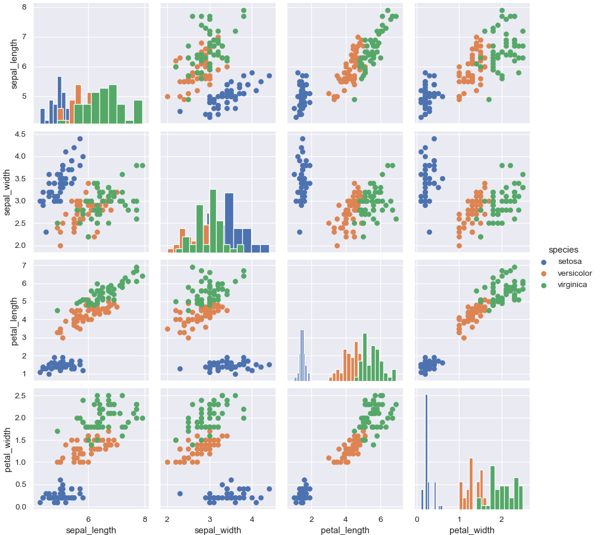
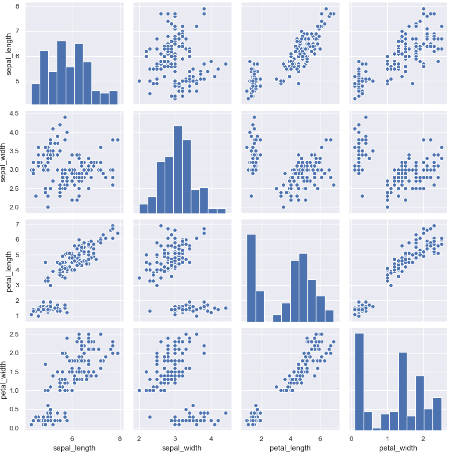
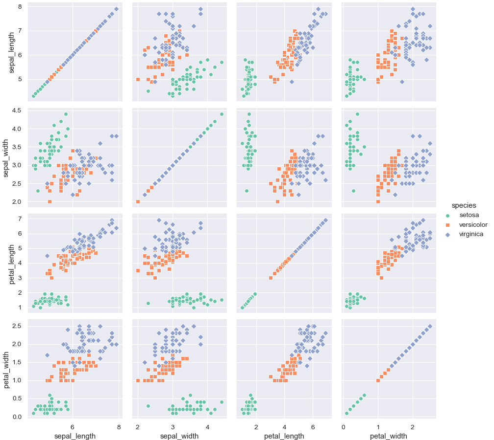

seaborn.PairGrid¶
-
class
seaborn.PairGrid(data, hue=None, hue_order=None, palette=None, hue_kws=None, vars=None, x_vars=None, y_vars=None, corner=False, diag_sharey=True, height=2.5, aspect=1, layout_pad=0, despine=True, dropna=True, size=None)¶ Subplot grid for plotting pairwise relationships in a dataset.
This class maps each variable in a dataset onto a column and row in a grid of multiple axes. Different axes-level plotting functions can be used to draw bivariate plots in the upper and lower triangles, and the the marginal distribution of each variable can be shown on the diagonal.
It can also represent an additional level of conditionalization with the
hueparameter, which plots different subsets of data in different colors. This uses color to resolve elements on a third dimension, but only draws subsets on top of each other and will not tailor thehueparameter for the specific visualization the way that axes-level functions that accepthuewill.See the tutorial for more information.
-
__init__(self, data, hue=None, hue_order=None, palette=None, hue_kws=None, vars=None, x_vars=None, y_vars=None, corner=False, diag_sharey=True, height=2.5, aspect=1, layout_pad=0, despine=True, dropna=True, size=None)¶ Initialize the plot figure and PairGrid object.
- Parameters
- dataDataFrame
Tidy (long-form) dataframe where each column is a variable and each row is an observation.
- huestring (variable name), optional
Variable in
datato map plot aspects to different colors. This variable will be excluded from the default x and y variables.- hue_orderlist of strings
Order for the levels of the hue variable in the palette
- palettedict or seaborn color palette
Set of colors for mapping the
huevariable. If a dict, keys should be values in thehuevariable.- hue_kwsdictionary of param -> list of values mapping
Other keyword arguments to insert into the plotting call to let other plot attributes vary across levels of the hue variable (e.g. the markers in a scatterplot).
- varslist of variable names, optional
Variables within
datato use, otherwise use every column with a numeric datatype.- {x, y}_varslists of variable names, optional
Variables within
datato use separately for the rows and columns of the figure; i.e. to make a non-square plot.- cornerbool, optional
If True, don’t add axes to the upper (off-diagonal) triangle of the grid, making this a “corner” plot.
- heightscalar, optional
Height (in inches) of each facet.
- aspectscalar, optional
Aspect * height gives the width (in inches) of each facet.
- layout_padscalar, optional
Padding between axes; passed to
fig.tight_layout.- despineboolean, optional
Remove the top and right spines from the plots.
- dropnaboolean, optional
Drop missing values from the data before plotting.
See also
Examples
Draw a scatterplot for each pairwise relationship:
>>> import matplotlib.pyplot as plt >>> import seaborn as sns; sns.set() >>> iris = sns.load_dataset("iris") >>> g = sns.PairGrid(iris) >>> g = g.map(plt.scatter)

Show a univariate distribution on the diagonal:
>>> g = sns.PairGrid(iris) >>> g = g.map_diag(plt.hist) >>> g = g.map_offdiag(plt.scatter)

(It’s not actually necessary to catch the return value every time, as it is the same object, but it makes it easier to deal with the doctests).
Color the points using a categorical variable:
>>> g = sns.PairGrid(iris, hue="species") >>> g = g.map_diag(plt.hist) >>> g = g.map_offdiag(plt.scatter) >>> g = g.add_legend()
Use a different style to show multiple histograms:
>>> g = sns.PairGrid(iris, hue="species") >>> g = g.map_diag(plt.hist, histtype="step", linewidth=3) >>> g = g.map_offdiag(plt.scatter) >>> g = g.add_legend()

Plot a subset of variables
>>> g = sns.PairGrid(iris, vars=["sepal_length", "sepal_width"]) >>> g = g.map(plt.scatter)

Pass additional keyword arguments to the functions
>>> g = sns.PairGrid(iris) >>> g = g.map_diag(plt.hist, edgecolor="w") >>> g = g.map_offdiag(plt.scatter, edgecolor="w", s=40)
Use different variables for the rows and columns:
>>> g = sns.PairGrid(iris, ... x_vars=["sepal_length", "sepal_width"], ... y_vars=["petal_length", "petal_width"]) >>> g = g.map(plt.scatter)

Use different functions on the upper and lower triangles:
>>> g = sns.PairGrid(iris) >>> g = g.map_upper(sns.scatterplot) >>> g = g.map_lower(sns.kdeplot, colors="C0") >>> g = g.map_diag(sns.kdeplot, lw=2)

Use different colors and markers for each categorical level:
>>> g = sns.PairGrid(iris, hue="species", palette="Set2", ... hue_kws={"marker": ["o", "s", "D"]}) >>> g = g.map(sns.scatterplot, linewidths=1, edgecolor="w", s=40) >>> g = g.add_legend()

Methods
__init__(self, data[, hue, hue_order, …])Initialize the plot figure and PairGrid object.
add_legend(self[, legend_data, title, …])Draw a legend, maybe placing it outside axes and resizing the figure.
map(self, func, \*\*kwargs)Plot with the same function in every subplot.
map_diag(self, func, \*\*kwargs)Plot with a univariate function on each diagonal subplot.
map_lower(self, func, \*\*kwargs)Plot with a bivariate function on the lower diagonal subplots.
map_offdiag(self, func, \*\*kwargs)Plot with a bivariate function on the off-diagonal subplots.
map_upper(self, func, \*\*kwargs)Plot with a bivariate function on the upper diagonal subplots.
savefig(self, \*args, \*\*kwargs)Save the figure.
set(self, \*\*kwargs)Set attributes on each subplot Axes.
-